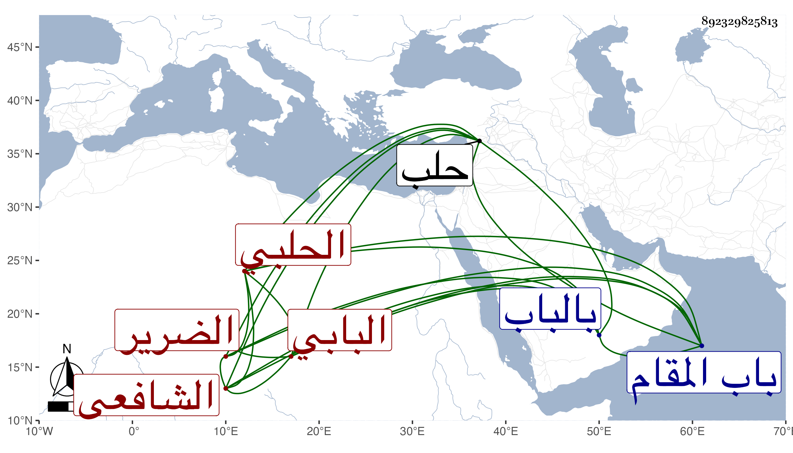

0902Sakhawi.DawLamic.ITO20230111-ara1.EIS1600.892329825813
Biography ID: 892329825813
320
عبد الملك بن علي بن أبي المنى بضم الميم ثم نون بن عبد الملك ابن عبد الله بن عبد الباقي بن عبد الله بن أبي المنى الجمال أو الزين البابي بموحدتين الحلبي الشافعي الضرير ويعرف بعبيد بالتصغير وربما يقال له المكفوف . ولد في حدود سنة ست وستين وسبعمائة بالباب وقدم منها وهو صغير فحفظ القرآن والمنهاج وألفية ابن مالك وتلا بالسبع على الشيخ بيرو وتخرج بالعز الحاضري وعنه أخذ في فن العربية المغنى وغيره وكذا قيل أنه أخذ عن المحب أبي الوليد ابن الشحنة شيئا وتفقه بالشرف الأنصاري وبالشمس النابلسي وسمع على الشرف أبي بكر الحراني وابن صديق ، وناب في الخطابة والإمامة بالجامع الكبير بحلب وجلس فيه للإقراء قاصدا وجه الله بذلك فانتفع به الناس وصار شيخ الإقراء بها وكذا حدث باليسير سمع منه الفضلاء وصنف في الفقه مختصرا التزم جمعه مما ليس في الروضة وأصلها والمنهاج ، وكان إماما عالما بالقراءات والعربية متقدما فيهما فاضلا بارعا خيرا دينا صالحا منجمعا عن الناس قليل الرغبة في مخالطتهم عفيفا عما بأيديهم لا يقبل من أحد شيئا ، ومن لطائفه أنه لم يكن يفرق بين الحلو والمر وقد ترجمه شيخنا في إنبائه وقال أنه لم يكن صينا ، وأثنى عليه ابن خطيب الناصرية وقال أنه رفيقه في الطلب على المشايخ وصار إماما في النحو والقراءات وغيرها مع الدين والمداومة على الاشتغال والأشغال بحيث انتفع به جماعة من الأولاد وغيرهم . مات في يوم الجمعة ثالث جمادى الآخرة سنة تسع وثلاثين عن سبعين سنة وكانت جنازته حافلة جدا تقدم الناس البرهان الحلبي بعد صلاة الجمعة بالجامع الكبير ودفن بمقبرة الصالحين خارج باب المقام رحمه الله وإيانا .
